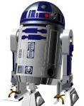
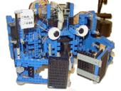
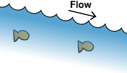
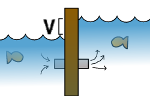
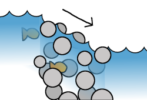
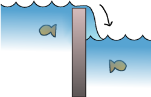
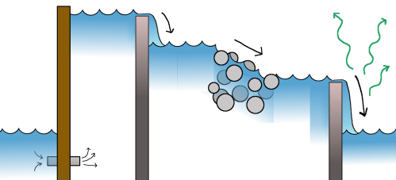

Agorobots - Tuesday plan
What is a robot?
You probably already know a robot are when you see it:
| Robots: |


|
| Not robots: |

|
So what is special about R2D2, Feelin' Crabby, and
Sojourner?
- Robots are man-made machines.
- Robots react to their environment.
- Robots actively try to do something.
How do you build a robot?
People have been trying to build robots for thousands of years, but
progress was very limited before one modern invention: electronics.
Using electronic circuits, it is possible to build tiny machines that
can do extremely complex tasks, from addition and multiplication to
intelligent decision-making. Electronics can be linked to the
physical world through a variety of sensors and motors to create
machines that interact with their environment in every possible way.
This is why we have to learn a little bit about electronics before we
can start building robots.
Water as a model for electricity.
Electricity is like water in a river; it flows downhill:

A battery is a pump that can maintain a difference in water level:

A resistor is a place where the river is full of rocks. Water
has a tough time flowing past it, so the level can drop quickly.

A diode is a waterfall; a place where the level of the water
suddenly changes by a certain amount.

A simple electronic circuit.
First of all, the battery gives us a voltage difference of 6 volts,
but we want 5, so we'll use a diode (a waterfall, remember) to drop
the level by a little bit (about 1 volt):
Now, we'll let the electricty flow across a resistor and another
diode, then return to the battery:
The second diode is special: as electricity flows over it, it emits
light! This is called a light-emitting-diode or LED. Here's
what the circuit looks like as a river:

Go back to the main page.